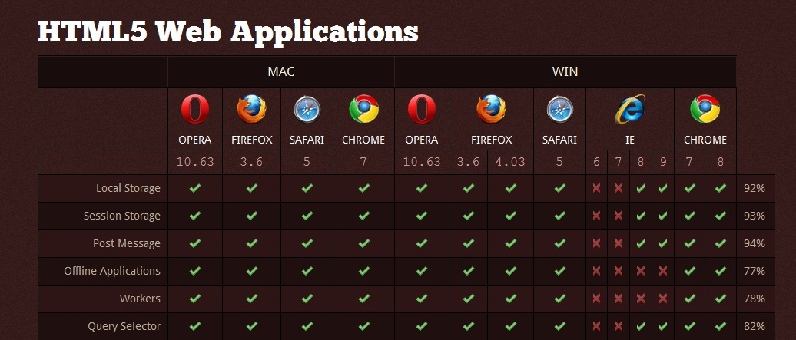

Le langage HTML
Nous allons decouvrir quelques facettes du langage HTML.
- Qu'est-ce que le HTML ?
- Comment l'utiliser ?
- Organiser son texte
- Ajouter des images
Qu'est-ce que le HTML ?
Le HTML (dit HyperText Markup Language) est un langage concu pour representer les pages web. C'est un langage de balisage ( = on utilise des balises
pour delimiter les differentes zones du code) permettant
de mettre en forme le contenu d'une page web, a l'aide de texte, d'images ou d'autres ressources.
Il a ete invente en 1991 par Tim-Berners Lee.

Il ne
faut pas confondre "Internet", le réseau informatique planétaire, développé par les Etats-Unis depuis les années 1960 et le "Web" qui est une
application de l'Internet, consistant en l'échange de pages web en HTML entre des machines hôtes (=serveurs), et des machines
clients (=ordinateurs personnels).
Comment l'utiliser ?
Afin d'utiliser HTML, il faut avant tout un editeur de texte comme Notepad++ ou Geany ainsi qu'un navigateur, ou plusieurs navigateurs. A noter qu'il est possible d'utiliser le logiciel Bloc-Notes de Windows
(ou equivalent comme Word), meme si celui-ci se revele beaucoup moins pratique que les editeurs de texte. Il faut faire attention a la compatibilite
des navigateurs. En effet,
comme les navigateurs n'evoluent pas en meme temps, les vieilles versions des navigateurs ne peuvent pas prendre en compte toutes les nouvelles
fonctionnalites. De plus, la plupart des navigateurs ne proposent pas de mise a jour automatique, contrairement a Google Chrome, ce qui fait que
les utilisateurs d'un meme navigateur ne verront pas systematiquement la meme chose (heuresement, le nombre de personne utilisant les antiques
versions de navigateurs diminue). Voici un tableau qui resume les differences entre navigateurs
a propos du langage HTML :

Afin de faire ce site Web, j'utilise l'editeur de texte "Notepad++" ainsi que le navigateur "Google Chrome".
Commencez par double-cliquer sur l'editeur de texte. Reglez la langue (parametrage --> preference) et le langage (Langage --> H --> HTML) afin d'optimiser
votre "comprehension du logiciel", c'est-a-dire la "comprehension des options" et la coloration syntaxique automatique. Maintenant que vous etes pares,
vous pouvez creer votre propre logiciel ! Creez votre fichier (Fichier --> Nouveau ou CTRL+N), et enregistrez-le quelque part sous le format "html",
c'est-a-dire "x.html". Vous avez desormais une page blanche, que vous etes libres de completer !
Organiser son texte
Il faut savoir que ce langage fonctionne avec des balises, de la forme < xxx >. Il y a des balises ouvrantes et fermantes, qui fonctionnent seulement quand
elles sont toutes les deux presentes. Il y a egalement les balises orphelines, ou on note le contenu a l'interieur des signes "<" et ">".
Elles servent a delimiter des titres, des paragraphes ou encore des
mots a souligner. Bien entendu, ces balises ont une syntaxe particuliere, qu'il va falloir apprendre a respecter. Dans les exemples suivants,
il faudra penser a enlever les espaces au sein des balises, si vous voulez que votre code fonctionne.
Voici une petite liste des balises existant dans ce langage:
- Ecrire un commentaire
" < ! - - Ceci est un commentaire - - >"
Vous pouvez noter tout ce qui vous chante entre les signes "<" et ">", cela ne s'affichera pas sur votre page web. Cela peut etre utile lorsque vous
avez pour habitude de vous perdre dans vos codes, vous permettant ainsi de resumer certaines parties par exemple.
- Sauter une ligne
Rien de bien difficile, il suffit d'ecrire "< br/ >" avant la ligne que vous voulez sauter.
- Faire des paragraphes
< p >
Ceci est un paragraphe. Remarque, vous pouvez utiliser "< p >" plusieurs fois pour pouvoir sauter des lignes.
< / p >
- Ecrire des titres
< h1 > Pour avoir un tres grand titre.. < / h1>
< h2 > Pour avoir un titre un tout petit peu plus petit.. < / h2>
Et ainsi de suite jusqu'a :
< h6 > Un titre vraiment petit < / h6>
- Faire ressortir certaines parties de son texte
Toutefois, meme si les parties du texte apparaissent differemment, pour l'ordinateur, elles sont juste considerees comme "importantes".
< strong > Cette balise met le texte en gras. < /strong >
< mark > Cette balise surligne le texte. < /mark >
< em > Cette balise met le texte en italique. < /em >
- Creer des listes
Il existe deux types de listes, les listes non ordonnees, et les listes numerotees.
< ul >
< li > Ceci est une < /li >
< li > liste non ordonnee. < /li >
< /ul >
Le rendu est de la forme :
- Ceci est une
- liste non ordonnee.
< ol >
< li > Ceci est une < /li >
< li > liste numerotee. < /li >
< /ol >
Cette fois, la liste ressemble a ceci :
1. Ceci est une
2. liste numerotee.
- Faire un lien vers un autre site
Pour ce faire, il suffit de recopier le passage suivant en changeant quelques parametres :"< a href="Google.fr">MoteurDeRecherche < /a >".
"href" fait reference au site indique. "Google.fr" est un exemple de site ou on peut aller. "MoteurDeRecherche" est l'endroit ou l'utilisateur va cliquer.
Il est bien entendu possible de naviguer entre plusieurs sites dont le fichier se situe dans un meme dossier, pour cela il faut taper :
"< a href="page2.html">Page2DeMonSite< /a >". Ici encore, "page2.html" correspond au nom de l'autre fichier, et "Page2DeMonSite" est
l'endroit ou l'utilisateur va cliquer.
- Creer une ancre
"< a href="#NomDeAncre">"Cliquer ici pour revenir au titre < /a >
"< h1 id="NomDeAncre">TITRE < /h1 >"
Donnez un nom a l'ancre pour pouvoir revenir dessus plus tard. N'oubliez pas de mettre "#" au moment d'ecrire la 1ere ligne.
- Mettre une infobulle
"< a href="Google.fr" title="Ceci est une infobulle" >MoteurDeRecherche < /a >
Cela affiche un message lorsque l'utilisateur passe sa souris sur le lien, ici "Ceci est une infobulle".
- Creer un lien pour envoyer un mail
< p > < a href="x@y.com">Cliquer ici pour envoyer un e-mail< /a >< /p >
Remplacer "x@y.com" par votre adresse email. Le message "Cliquer ici pour envoyer un e-mail" apparaitra comme un lien vers un autre site.
Voici divers aspects du langage HTML. Bien entendu, il en existe beaucoup plus !
Ajouter des images
Il existe differents types de fichier que l'on peut afficher sur un site.
Parmi eux, il y a les images ou les photos, de differents formats :
- Le format GIF presente jusqu'a 256 couleurs, et il a l'avantage d'etre anime.
- Le format JPEG (Joint Photographic Expert Group ) comporte jusqu'a 16 millions de couleurs differentes. Ce format a l'avantage de presenter des
photos d'une grande qualite, tout en reduisant considerablement le poids de l'image.
- Le format PNG (Portable Network Graphics) a l'avantage d'avoir une qualite d'image aussi grande que possible, et peut rendre les images transparentes.
Il existe deux versions de PNG : PNG 8 bits (256 couleurs) et PNG 24 bits (jusqu'a 16 millions de couleurs). Toutefois, a cause de certains problemes de
compatibilite d'Internet Explorer, notamment dans les anciennes versions, les PNG 24 bits peuvent ne pas s'afficher.
- Il existe bien d'autres formats, comme le format BITMAP, mais une bonne partie d'entre eux a pour defaut de ne pas suffisamment compresser les
images, ce qui peut ralentir tres fortement la navigation sur le web.
- Inserer une image
"< p >
< img src="image.jpg" alt="image" />
< / p>"
Ici, "src" est le chemin qui mene au fichier (il est preferable d'entreposer l'image dans le meme dossier que la page web. "alt" est un texte alternatif,
qui apparait lorsque l'image de s'affiche pas, mais qui a egalement une fonction particuliere pour les personnes malvoyantes.
- Ajouter une infobulle sur une image
"< p >
< img src="image.jpg" alt="image" title="Ceci est une infobulle" />
< / p>"
On reprend le schema precedent, et pour afficher une infobulle, on utilise le mot-clef "title". N'oubliez pas, seuls "src" et "alt" sont obligatoires
pour inserer une image.
Retourner en haut de la page
Revenir sur le site principal
Des idees? Des suggestions? Des reclamations? Envoyez vos idees ici !